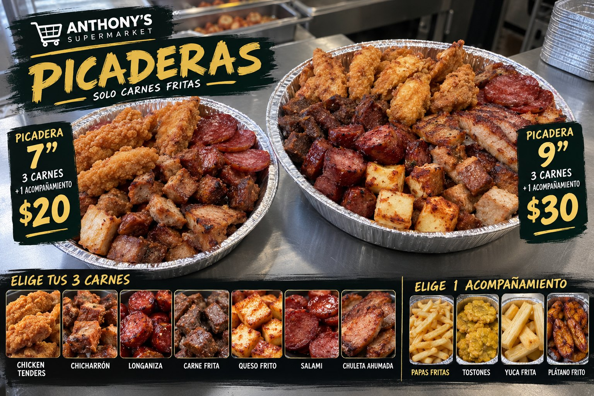
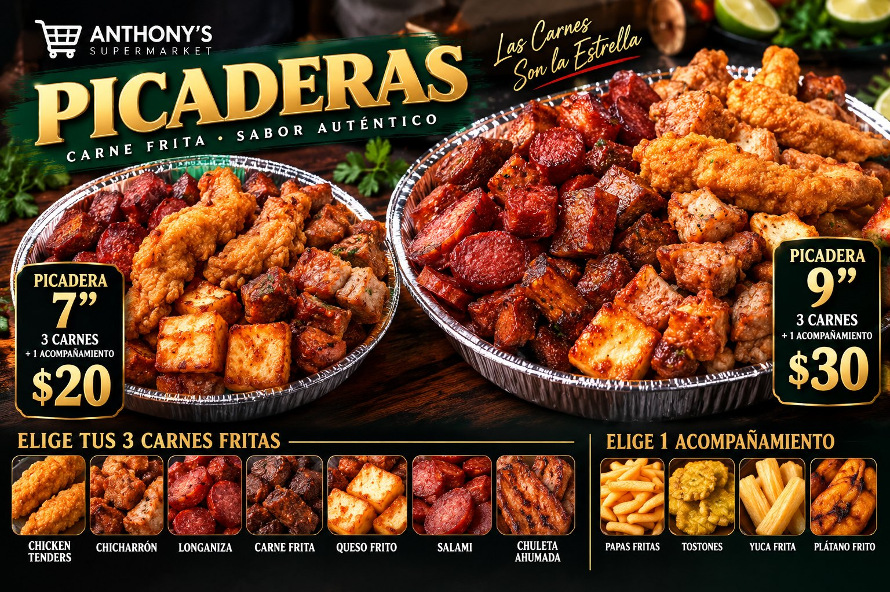
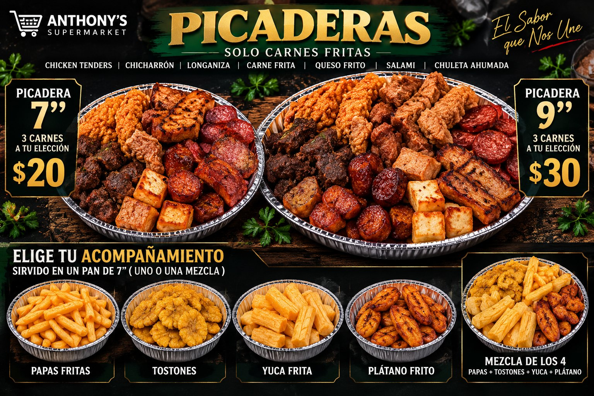
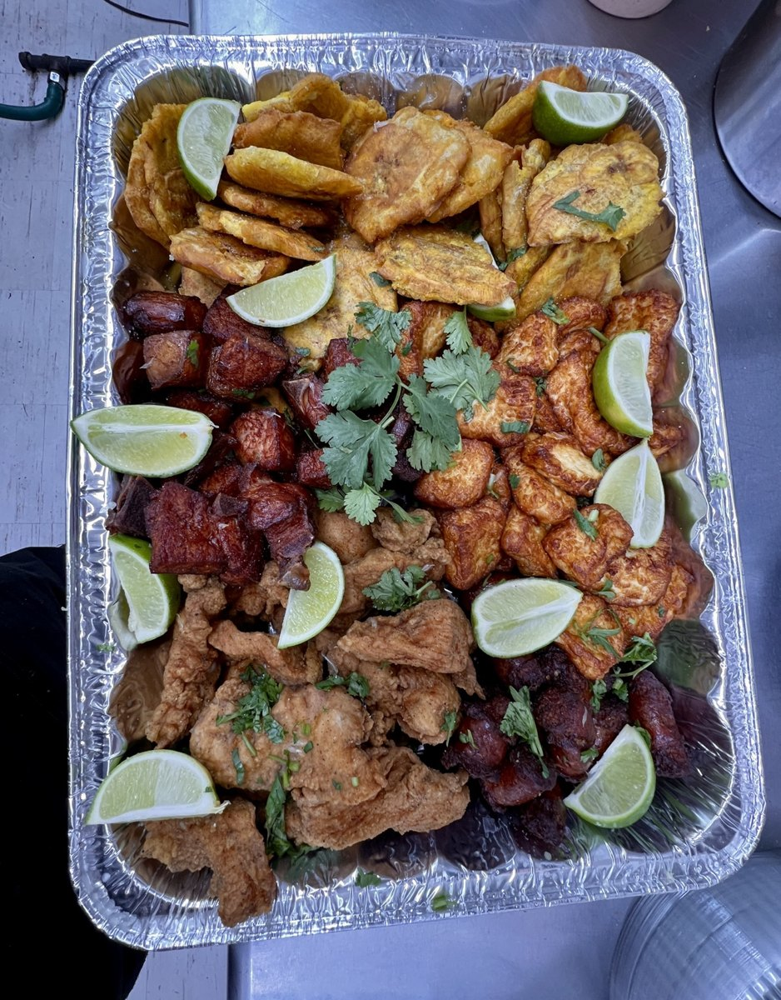
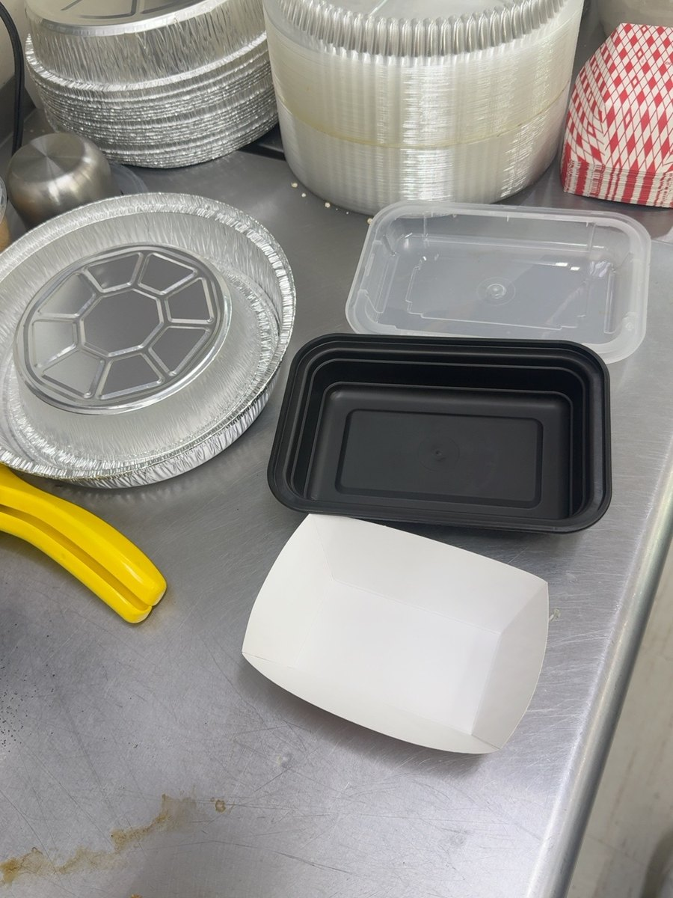

Kitchen Command Center v2 prototype
Edit menu drafts, approve a local snapshot, and preview three coordinated TVs. The existing signage is not connected.
TV 1 · Platos del Día
Open full-screen boardTV 2 · Carnes y Porciones
Open full-screen boardTV 3 · Especialidades
Open full-screen boardLatest Visuals & Real References
First three images are AI design concepts, not actual food photos. Last two are real store references. Only owner-approved Grade-A edits of actual food should go to production.





Price Book · In-Store
Confirmed = owner-supplied price. Proposed = not approved. Change a price to create a draft requiring local approval. No automatic 70% grocery markup on kitchen food.
| Item | Price ($) | Category | Approval state | Available |
|---|
Photos: uploaded real-food originals are included as references; do not treat them as Grade-A approved imagery. Picadera source is a rectangular tray, not the finalized round serving. This preview intentionally does not fabricate round-pan photography.